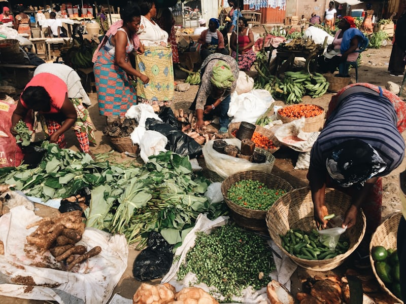

Discover local, on-demand delivery or pickup from restaurants, nearby grocery and convenience stores, and more.
Fresher Tomatoes 🍅, Pepper 🌶️

Vegetables, Cabbage 🥬, Onions 🧅
Yam, Potatoes, Plantain
Sweet Semo qnd Ogunfe, Amala and gbegeri, rice, beans, Shaki, Cow leg